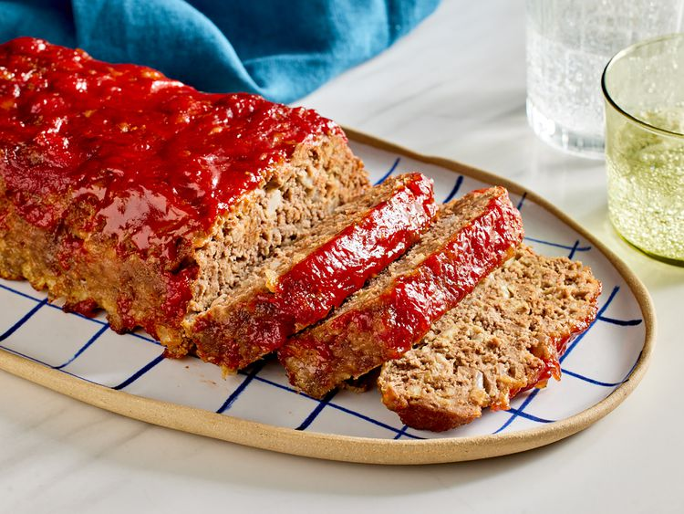
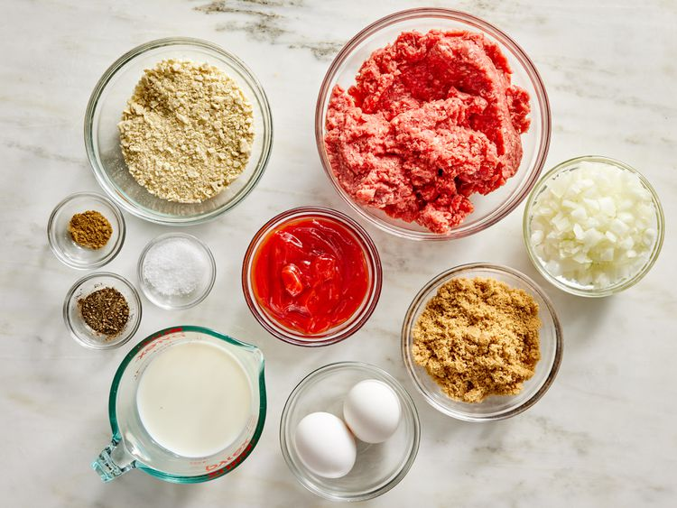

Home
Brown Sugar Meatloaf Recipe

Ingredients:
- cooking spray
- ½ cup packed brown sugar
- ½ cup ketchup
- 1 ½ pounds lean ground beef
- 2 large eggs
- 1 small onion, chopped
- ¾ cup milk
- ¾ cup finely crushed saltine cracker crumbs
- 1 ½ teaspoons salt
- ¼ teaspoon ground black pepper
- ¼ teaspoon ground ginger
Instructions:
- Gather all ingredients. Preheat the oven to 350 degrees F (175 degrees C). Lightly grease a 5x9-inch loaf pan.

- Press brown sugar into the bottom of the prepared loaf pan and spread ketchup over top of the sugar.
- Mix all remaining ingredients thoroughly in a mixing bowl and shape into a loaf.
- Place the loaf on top of the ketchup and sugar crust.
- Bake in the preheated oven for 1 hour or until juices are clear.